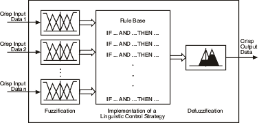

You can use fuzzy controllers to control fuzzy systems. Most traditional control algorithms require a mathematical model of the system you want to control. However, many physical systems are difficult or impossible to model mathematically. In addition, many processes are either nonlinear or too complex for you to control with traditional strategies. However, if you can describe a control strategy qualitatively, you can use fuzzy logic to create a fuzzy controller that emulates a heuristic rule-of-thumb strategy.
The following image illustrates the process of a fuzzy controller.

Fuzzification is the process of associating crisp, or numerical, input values with the linguistic terms of the corresponding input linguistic variables.
For example, a fuzzy controller might associate the temperature reading from a thermometer with the linguistic terms cold, moderate, and hot for the current temperature linguistic variable. Depending on the membership functions for the linguistic terms, the temperature value might correspond to one or more of the linguistic terms.
After a fuzzy controller fuzzifies the input values of a fuzzy system, the fuzzy controller uses the corresponding input linguistic terms and the rule base to determine the resulting linguistic terms of the output linguistic variables.
For example, suppose the current temperature of a room is 50 degrees, which corresponds to a linguistic term of cold with a degree of membership of 0.4. Also suppose the desired temperature is 70, which corresponds to a linguistic term of moderate with a degree of membership of 0.8. The fuzzy controller invokes the following rule of the fuzzy system: IF current temperature is cold AND desired temperature is moderate, THEN heater setting is low.
Notice that this rule consists of two antecedents, "current temperature is cold" and "desired temperature is moderate". The truth value of each antecedent is equal to the degree of membership of the linguistic variable within the corresponding linguistic term. The fuzzy logic controller uses an antecedent connective to determine how to calculate the truth value of the aggregated rule antecedent. Suppose the invoked rule in this example uses the AND (Minimum) antecedent connective, which specifies to use the smallest degree of membership of the antecedents as the truth value of the aggregated rule antecedent. Therefore, the truth value of the aggregated rule antecedent is 0.4.
You can specify a degree of support for each rule of a fuzzy system. The weight of a rule is equal to the degree of support multiplied by the truth value of the aggregated rule antecedent. The fuzzy controller uses an implication method to scale the membership functions of an output linguistic variable based on the rule weight before performing defuzzification.
Defuzzification is the process of converting the degrees of membership of output linguistic variables within their linguistic terms into crisp numerical values. A fuzzy controller can use one of several mathematical methods to perform defuzzification. The most accurate defuzzification method for a fuzzy controller varies based on the control application.